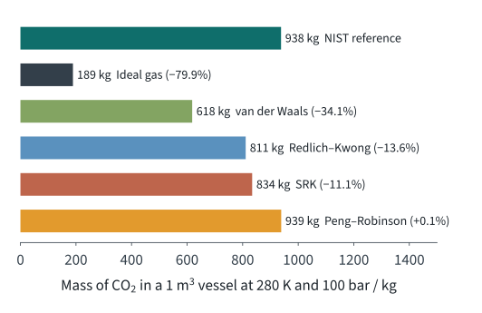
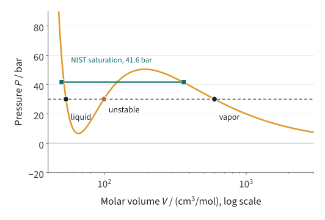
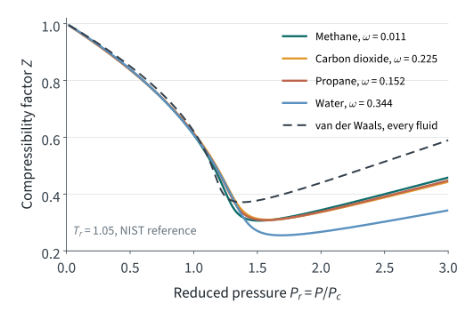
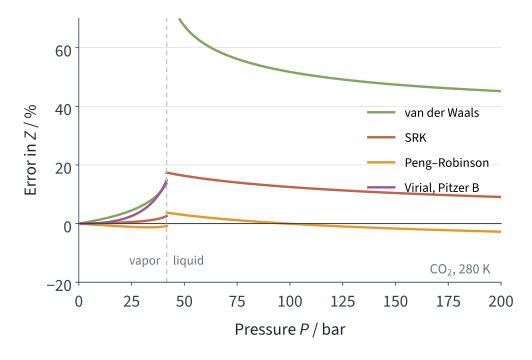
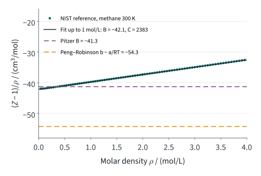
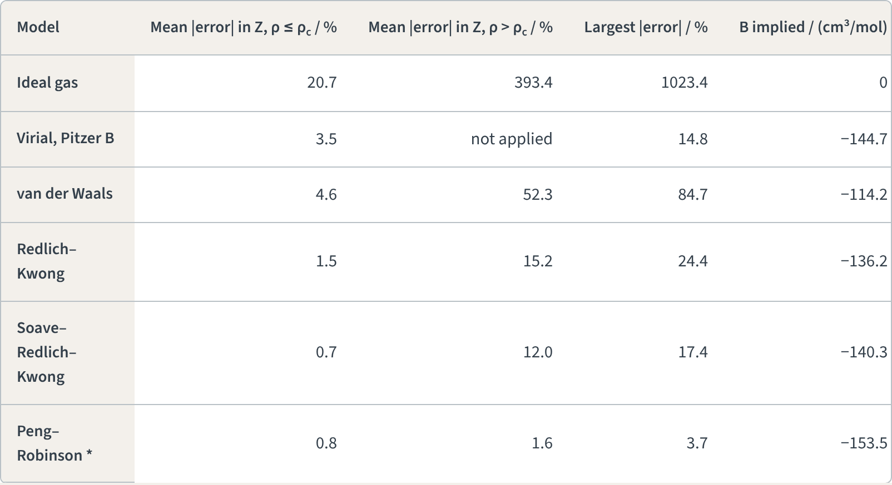

Session P2 of 7 · before the midterm · 180 minutes
Before the midterm · 7 sessions P1 · Framework P2 · PVT and equations of state P3 · Residual properties P4 · Pure-component equilibrium and fugacity P5 · Mixtures P6 · Excess properties and activity P7 · Choosing a property model
After the midterm · 7 sessions 1 · VLE and flash 2 · Experimental VLE and consistency 3 · Liquid stability and LLE 4 · Solids and adsorption 5 · Chemical equilibrium 6 · Electrochemical equilibrium 7 · Choosing a model from evidence
P1 showed that PVT data and Cp give every property. Most fluids and mixtures have no reference table, so the PVT data come from an equation of state. Today: the virial and cubic equations, which root to use, and how large their errors are against reference data.

A 1 m³ buffer vessel holds CO₂ at 280 K and 100 bar, a compressed liquid.
The reference holds 938 kg. The ideal gas predicts 189 kg. Four cubic equations, each built from Tc and Pc, give 618 to 939 kg.
Peng–Robinson is within 0.1% here, and 23% off for liquid water at 500 K.
By the end of today you can compute each bar and say when to trust it.
NIST Chemistry WebBook, SRD 69; CO₂ from the Span and Wagner (1996) reference equation of state. Lab P2.
Where you show it
0–30 Essential concepts virial, cubics, roots, ω
30–40 Activity 1 Peng–Robinson by hand
40–60 Demo Lab P2
60–70 Break
70–140 Activity 2 · pair investigation eight isotherms, roots, B
140–180 Discussion and exit ticket answer the session question
Session question When no reference table exists, which equation of state gives the PVT data a calculation needs, and how do we know how wrong it is?
Before class · 20 min Read the Session P2 pre-class note and answer its three questions.
After class · 40 min Finish Lab P2: all eight isotherms with Peng–Robinson, then A–C in the Graduate view. Submit the study file with your name and ID.
Studying on your own? Follow the same order. Turn on narration or captions at the bottom left, and pause at each activity slide.
The compressibility factor measures the departure from the ideal gas:
Z=\frac{PV}{RT}
An equation of state must give
Critical compressibility Zc = PcVc/RTc
| Zc | |
|---|---|
| methane · CO₂ · propane (NIST) | 0.286 · 0.275 · 0.276 |
| water (NIST) | 0.229 |
| van der Waals | 0.375 |
| Redlich–Kwong, SRK | 0.333 |
| Peng–Robinson | 0.307 |
A two-constant cubic fixes Zc. Every one is too large, so the dense region is where to expect errors.
Z=1+\frac{B}{V}+\frac{C}{V^2}+\dots\qquad Z\approx1+\frac{BP}{RT}
B(T) comes from interactions of molecule pairs, C(T) from triples. B is negative at low T (attraction wins) and positive at high T.
Pitzer correlation (nonpolar gases):
\frac{BP_c}{RT_c}=B^0+\omega B^1
B⁰ = 0.083 − 0.422/Tr1.6, B¹ = 0.139 − 0.172/Tr4.2
Use the truncated form where BP/RT is small, roughly Vr = V/Vc > 2. It has no liquid branch.
Methane, 300 K: Pitzer B = −41.3 cm³/mol; from the NIST data −42.1 (2% apart).
At 100 bar the truncated equation gives Z = 0.834 against 0.856 (−2.5%). Up to the critical density (about 211 bar) the mean error is 5.7%: the C/V² terms matter.
The ideal gas is within 1% of Z only up to 6 bar for methane at 300 K.
P=\frac{RT}{V-b}-\frac{a(T)}{(V+\varepsilon b)(V+\sigma b)}\qquad a=\Omega_a\frac{R^2T_c^2}{P_c}\alpha(T_r,\omega),\quad b=\Omega_b\frac{RT_c}{P_c}
| Equation | Ωa | Ωb | α(Tr) | ε, σ | Zc |
|---|---|---|---|---|---|
| van der Waals (1873) | 27/64 | 1/8 | 1 | 0, 0 | 0.375 |
| Redlich–Kwong (1949) | 0.42748 | 0.08664 | Tr−1/2 | 0, 1 | 0.333 |
| Soave–Redlich–Kwong (1972) | 0.42748 | 0.08664 | [1 + m(1 − Tr1/2)]² | 0, 1 | 0.333 |
| Peng–Robinson (1976) | 0.45724 | 0.07780 | [1 + m(1 − Tr1/2)]² | 1 − √2, 1 + √2 | 0.307 |
SRK: m = 0.480 + 1.574ω − 0.176ω² · PR: m = 0.37464 + 1.54226ω − 0.26992ω²
Ωa and Ωb follow from the two critical conditions. SRK and PR fitted m(ω) to vapor pressures of nonpolar fluids, not to densities.

With A = aP/(RT)² and B = bP/RT the equation is a cubic in Z:
(Z − B)(Z + εB)(Z + σB) − (Z + εB)(Z + σB) + A(Z − B) = 0
CO₂, 280 K, 30 bar · Peng–Robinson Z = 0.0689 (liquid), 0.128, 0.769 (vapor; reference 0.779).
The middle root has (∂P/∂V)T > 0, so κT < 0: unstable (P1). Of the outer two, the stable one has the lower G (P4). Keep only real roots with Z > B.

Two-parameter idea: at the same Tr and Pr, every fluid has the same Z. A cubic with Ωa, Ωb gives exactly one curve.
Acentric factor (Pitzer): ω = −1 − log₁₀(Psatr) at Tr = 0.7.
At Tr = 1.05, Pr = 2 Methane, CO₂, propane: Z = 0.344, 0.336, 0.338. Water: 0.267. Van der Waals: 0.440.
For CO₂, 0.7Tc is below the triple point: ω = 0.225 needs an extrapolated vapor pressure.

Mean |error| in Z, ρ > ρc · NIST reference
| Isotherm | SRK | PR |
|---|---|---|
| methane, 300 K | 4.5 | 2.3 |
| CO₂, Tr = 1.05 | 15.4 | 5.3 |
| propane, 300 K, liquid | 7.3 | 5.1 |
| CO₂, 280 K, liquid | 12.0 | 1.6 |
| water, 500 K, liquid | 39.4 | 23.0 |
Below ρc both are within 0.2–4.3% on all eight isotherms.
The cubic has its own vapor pressure: the pressure where the liquid and vapor roots have equal G (P4).
Peng–Robinson against NIST
| Psat | VL sat | |
|---|---|---|
| CO₂, 280 K | −0.1% | +3.7% |
| propane, 300 K | −0.0% | −3.8% |
| water, 500 K | +0.9% | +23.0% |
α(Tr, ω) was fitted to vapor pressures, so Psat is good. Densities were not in the fit.
Volume translation (Péneloux): V = VEOS − c. A constant c changes no phase equilibrium, because it shifts both phases equally.
Water, 500 K: c = 5.0 cm³/mol makes the saturated liquid exact and the liquid branch error 0.2%. For CO₂ the same correction raises the liquid error from 1.6% to 4.4%: c repairs one volume, not the compressibility.

From Z = 1 + Bρ + Cρ²: (Z − 1)/ρ = B + Cρ. The intercept is B.
A cubic implies B = b − a/RT.
Methane, 300 K Data −42.1, Pitzer −41.3, PR −54.3 (−29%), SRK −41.5.
Water, 500 K Data −170.1, Pitzer −166.2.
PR predicts Z at 100 bar to 2.5% and misses the low-density slope by 29%. Fitting a model on one property does not validate it on another.
Activity 1 · 10 minutes · alone, then with a partner
Methane at 300 K and 100 bar: Tc = 190.564 K, Pc = 45.992 bar, ω = 0.0114. Compute α, a, b, A and B for Peng–Robinson. Then find the vapor root with the iteration Z ← 1 + B − A(Z − B)/(Z² + 2BZ − B²), starting from Z = 1. Compare with the truncated virial equation and the reference Z = 0.8556.
Use SI units: Pc in Pa, R = 8.314 J/(mol K). Three or four iterations are enough to see where it converges.
On your own: pause here and write your answer. In place of a partner, compare it with the next slide and write one sentence on any difference and its cause.
Tr = 1.5743, m = 0.3922, α = 0.8102
a = 0.45724 R²Tc²/Pc × α = 0.2022 Pa m⁶/mol²
b = 0.07780 RTc/Pc = 2.680 × 10⁻⁵ m³/mol
A = 0.3250, B = 0.1075
Iteration from Z = 1
| Step | 1 | 2 | 3 | 4 | converged |
|---|---|---|---|---|---|
| Z | 0.8664 | 0.8409 | 0.8354 | 0.8342 | 0.8339 |
Reference 0.8556: PR −2.5%. Virial with Pitzer B: 0.8344, also −2.5%.
Here the cubic has one real root (T > Tc), so the iteration cannot pick a wrong one.

Lab P2 should report CO₂, 280 K, PR: 0.8% below ρc, 1.6% above · roots at 30 bar 0.0689, 0.128, 0.769 · methane B from data −42.1 cm³/mol
Taking the wrong root. The middle root is not a phase, and the real part of a complex root is not a root. Sort the real roots with Z > B; below Tc, the stable one has the lower G.
Truncated virial for a dense fluid. Z = 1 + BP/RT has no liquid branch and fails near ρc: 12% mean error for methane at Tr = 1.05 although B is within 2%.
Trusting a cubic liquid density. PR is within 2% for liquid CO₂ at 280 K and 23% off for water at 500 K. Check against data or apply a volume shift.
Pressure in bar inside A and B. A = aP/(RT)² needs P in Pa when a is in Pa m⁶/mol². A factor of 10⁵ makes every root wrong.
Next Activity 2: a pair investigation in Lab P2, 70 minutes.
Before you leave your seat, check that Lab P2 opens on your device and that the methane case is saved.
Activity 2 · 70 minutes · in pairs: one drives Lab P2, one checks by hand, then swap
20 min · the error map Calculate all eight isotherms with Peng–Robinson. Record the error below and above ρc, and repeat two of them with SRK. Where would you trust each equation?
15 min · roots CO₂ at 280 K: compare the three root rules with PR and with van der Waals. Where does “lower G” pick a different phase from the reference, and why?
20 min · B and the liquid Lab P2 A: B from the data against Pitzer and PR. Lab P2 C: the equation’s own vapor pressure, liquid volume and the shift c.
15 min · explain Two sentences with numbers answering the session question. Download the study file with your names and IDs.
On your own: do both roles yourself: work in Lab P2, then check one Z by hand with the iteration from Activity 1. Pause the slides while you work; the next slide lists what to hand in.
Graduate extension Lab P2 B: at Tr = 1.05, how far does two-parameter corresponding states hold, and why does water depart?
Check your results · mean |error| in Z / %
| Isotherm | PR ρ ≤ ρc | PR ρ > ρc | B data / PR |
|---|---|---|---|
| methane, 300 K | 2.0 | 2.3 | −42.1 / −54.3 |
| CO₂, Tr = 1.05 | 1.9 | 5.3 | −104.9 / −117.4 |
| water, Tr = 1.05 | 2.7 | 34.5 | −70.5 / −82.7 |
| CO₂, 280 K | 0.8 | 1.6 | −142.0 / −153.5 |
| propane, 300 K | 0.2 | 5.1 | −385.4 / −401.9 |
| water, 500 K | 1.0 | 23.0 | −170.1 / −157.4 |
B in cm³/mol, fitted up to 1 mol/L.
Discuss in pairs, then with the class. On your own: write two or three sentences for each question.
Virial Exact as ρ → 0. B from data or the Pitzer correlation (1–3% for nonpolar gases). The truncated form only where BP/RT is small; no liquid.
Cubics Tc, Pc and ω set a, b and α(T). Choose real roots with Z > B; below Tc, the lower-G root. Gas Z within 0.2–4%; dense fluid 2–47%.
Evidence A good vapor pressure does not imply a good density, and a good Z does not imply a good B. Test the property the calculation uses.
Session question: for gases, Peng–Robinson or SRK give Z within a few percent; for liquids and near-critical fluids, check against data or shift the volume. The CO₂ tank: 938 kg, not 189.
Next session P3: from Z to H, S and G, the residual properties.
Exit ticket and feedback · alone · 5 minutes · anonymous
Peng–Robinson gives the vapor pressure of water at 500 K within 1% but its liquid volume 23% too large. What was the equation tuned to, and what would you check before using it to size a liquid storage tank?
Scan the code or open the link. The same form asks three short questions about today: pace, confidence and whether the lab worked.
No name or student ID is recorded. Wait for “Response received.”
Hand in · this week Your Lab P2 study file with the eight isotherms, A–C, name and student ID. Upload it to myCourseVille, in the assignment for that lab.
Prepare · Session P3 Read the Session P3 pre-class note. About 20 minutes.
Optional · graduate Lab P2 E: write a Peng–Robinson solver with an AI assistant and check it against the lab.
Open Lab P2 in the Graduate view →
Starts at 4. Investigate what an equation of state can support. A: Fit B for every isotherm. B: Compare at the same Tr. C: Compare the phase boundaries. E: Download the reference isotherms (CSV).